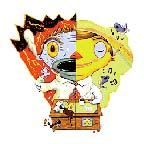
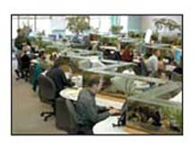

Meta View
Preventing Burnout
The continuing demand to do more (sometimes with less) is
physically exhausting and draining if not handled properly.
Smart professionals recognise the early signs of burnout and
deal with it.
By Jonathan Poe - Meta Group
Many
senior staffers find themselves overly committed, emotionally
drained and stressed. These feelings are often accompanied
by physical manifestations such as health problems, sleepless
nights, high blood pressure, and food cravings. Although (real
or perceived) short-term pressures are good for stretching
people's capabilities, long-term exposure without coping mechanisms
usually results in physical, professional, or partnership
fatalities. Top-notch CIOs are vigilant for terminal fatigue
and fatal flaws, ways of thinking, judging, analysing and
executing.
Currently, 75 percent or more of IT professionals experience
significant levels of stress in their individual, departmental,
or corporate performance. This number has been fairly constant
during the past several decades, and our research indicates
no decline is forecast through 2010. Through 2005, 15 percent
or more of IT professionals will leave the profession because
of this resultant stress, loss of control, lowered self-esteem,
or fatigue. However, through 2006, a select group of IT practitioners
(30 percent) will make concerted efforts to reform, restore,
and rebalance their lifestyles for more balance and longevity.
The good news about burnout is that it can be avoided. Handling
stress is a best practice among long-term IT professionals.
Our research uncovers the following seven practical guidelines
for preventing burnout and increasing lifetime productivity:
- Periodically stop, step back, and reflect for
a few moments. Spending a few moments alone in
quietness has long been a best practice. It enables people
with great responsibility to see the bigger picture, refocus,
reset priorities, refresh themselves, and ensure realistic
and achievable objectives. Experienced managers exploit
these rest stops to pace themselves and their teams. World-class
executives allocate time and energy to do this activity
daily.
- Balance physical, mental, and emotional activities.
Wellness programmes have long been part of high-performing
(people-friendly) firms and the practice of long-tenured
professionals. Wellness programmes can also create informal
networks of people (increase personnel connectivity) and
lower corporate bureaucracy (speed corporate information
flow). Office personnel frequently take brisk walks at lunch
and stretch between telephone calls. Healthy lifestyles
require balanced diets, exercises, rest, and thinking. Skilled
executives plan and execute balanced regimes weekly.
- Take short breaks throughout the workday.
Whether it is to get a drink of water, deliver a memo by
hand, or manage by walking around, physically moving away
from the one's immediate work environment breaks up the
mundane aspects of work ("administrivia") and
enables seeing different perspectives on work. By physically
changing the environment, accomplished professionals know
that mental and emotional states also change. Short breaks
also enable managers to think about how the work should
be done (possibly increasing speed) versus just blindly
following a checklist (aged procedures). Managers perform
their best when able to think and plan work daily versus
succumbing to the constant environment of interruptions.
- Have a non-work passion. Similar to having
catalysts to push and pull a person to work, there should
be external passions to pull and push a person from work.
Often, experimentation in non-work passions creates reusable
tools, knowledge, and techniques for work. Although non-work
passions require equal mental concentrations, they are often
easier to step back from and in doing so enable practitioners
to reuse this technique (and others) at work. Non-work passions
also teach individuals how to manage multiple projects in
parallel with less work risk.
- Take regular vacations. Long periods
away from work reduce stress, build new neural pathways,
and create small-talk artefacts that make Type A or extremely
competent professionals more humane and easier to relate
to (increases credibility). Vacations generate gifts, souvenirs,
and artefacts (pictures, memorabilia) that start casual
conversations, which improves business relationships. Taking
regular vacations also reinforces "walking the talk"
and ensuring that team-mates and subordinates take vacations
to prevent their burnouts.
- Inject
humour, fun, and a positive outlook into work.
Although laughter and humour provide brief moments of relief,
fun generates passion and balanced perspectives. Mastery
of humour and fun creates executives who are more memorable
and who enjoy large followings. Fun also motivates people
to tackle harder jobs. Positive outlooks dispel gloom, enable
dealing with Murphy's Law, and support staying with time-tested
processes when answers are not readily apparent at the start.
Positive outlooks also serve as catalysts to new ideas and
innovative thinking.
- Seek support. No one is perfect. Everyone
has limitations. Similar to how teams can accomplish more
than one individual, experienced professionals have support
teams to refresh themselves and their tools, methods, and
attitudes. One of the singular moments in a person's career
is when he or she moves from being one-dimensional to multidimensional.
Instead of always starting from scratch, learned scholars
build on the mistakes of and lessons learned by others.
Drawing on communities of practice, knowledge and interest
saves time, energy and effort.
CIOs and their directors are attentive for burnout in themselves
and their staffs. By following the aforementioned seven simple
habits, IT professionals revive and thrive. As technologies
and customer expectations rapidly evolve, street-smart individuals
develop their mechanisms for coping, understanding and transforming.
The alternative, burnout, is unacceptable to most high-performing
individuals.
Jonathan Poe is senior vice president & principal
analyst at META Group.
|